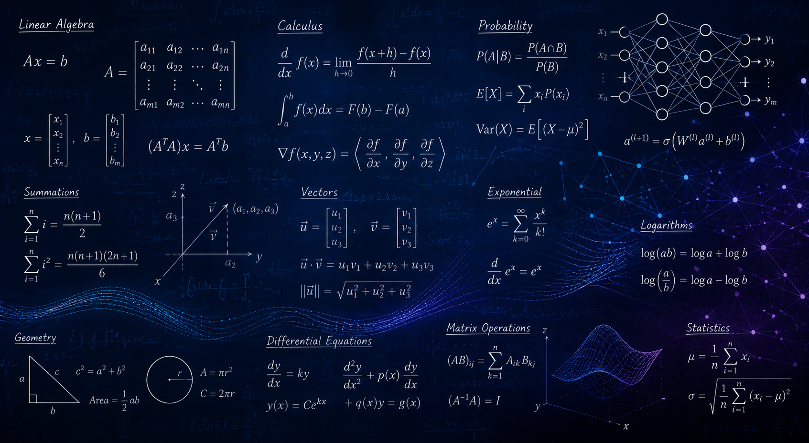

AI/ML · Software Engineering · Data
Jackie Coughlin is an AI developer with a B.S. in Mathematics and Computer Science from Tufts University. She builds neural networks, develops data pipelines, and tests LLM applications in enterprise environments. At Thermo Fisher Scientific, she designs scalable AI systems and validates MCP-powered workflows using Python, TensorFlow, and AWS.
Currently
Building scalable AI systems that drive real-world impact.
Currently part of Thermo Fisher Scientific’s Digital Leadership Development Program, developing AI-driven solutions and contributing to enterprise-scale LLM initiatives.
Selected Work
Projects that make information easier to use.
Applied model projects
Tools and applications
Analysis and dashboards
Contact